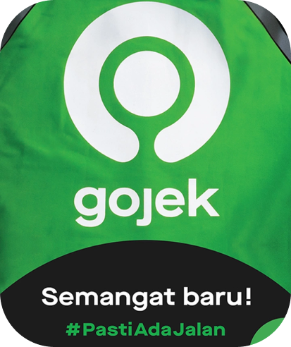

Berawal dari layanan transportasi, sekarang aplikasi Gojek memiliki lebih dari 20 layanan yang menjadi solusi buat tantangan sehari-hari. Berkat itu juga, Gojek menjadi salah satu platform teknologi terbesar yang melayani jutaan pengguna di Asia Tenggara dengan mengembangkan tugas Super-app:untuk customer,mitra driver dan mitra merchant
Tentang Gojek

Layanan Gojek
GoRide
Kami punya lebih dari 2 juta mitra driver yang tersebar di 203 kota dan kabupaten se-Indonesia. Baik kamu di Jakarta, Bogor, Depok, Tangerang, Bekasi, ataupun kota lainnya; kapanpun kamu butuh, langsung pesen aja.
GoCar
GoCar adalah pilihan transportasi yang memberikan kecepatan, kemudahan pemesanan, dan kemudahan menentukan tujuan pengantaran. Yang terpenting, GoCar juga memberikan keamanan dan kenyamanan bagi para Pelanggan. Pada layanan GoCar, Anda akan mengantarkan Pelanggan dari tempat penjemputan ke tempat tujuan, dengan jarak maksimum 100 km.
GoFood
Kami akan terus memperbanyak wilayah operasional GoFood, biar semua orang se-Indonesia makin mudah kalau mau pesen makanan! Tentunya juga bagi para merchant, supaya jualan aneka makanan dan minumannya jadi lebih gampang.